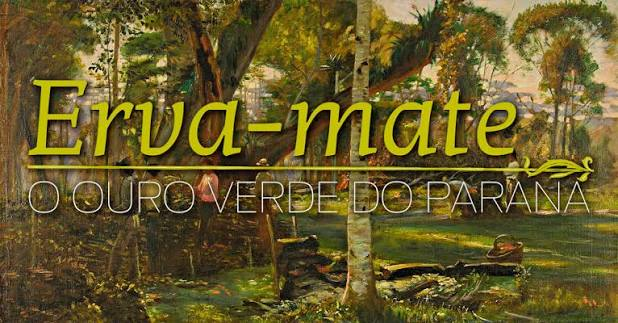
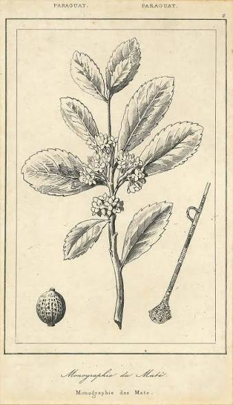

inicio
A erva-mate vai muito além do chimarrão: ela é a verdadeira raiz da identidade cultural do Paraná. Mais do que movimentar a economia, a cultura do "ouro verde" inspirou gerações de artistas paranaenses que registraram em telas, esculturas, gravuras e movimentos literários o cotidiano dos engenhos, as paisagens dos ervais e a força dos trabalhadores.

Como esse tema se desenvolveu?
A erva-mate vai muito além do chimarrão: ela é a verdadeira raiz da identidade cultural do Paraná. Mais do que movimentar a economia, a cultura do "ouro verde" inspirou gerações de artistas paranaenses que registraram em telas, esculturas, gravuras e movimentos literários o cotidiano dos engenhos, as paisagens dos ervais e a força dos trabalhadores.

erva mate
erva-mate (Ilex paraguariensis) é o coração da cultura do Sul do Brasil. Nascida no meio da Floresta de Araucárias, ela é uma planta nativa da América do Sul que carrega séculos de história, tradição e relevância econômica. A história da planta começou com os povos indígenas, principalmente os Guarani e Kaingang, que já conheciam suas propriedades estimulantes e medicinais muito antes da chegada dos colonizadores. Para eles, o consumo das folhas infusionadas em água não era apenas um hábito diário, mas um ritual de convivência, energia e conexão espiritual.

curiosidades
curiosidade 1
escreva uma curiosidade sobre o tema pesquiado